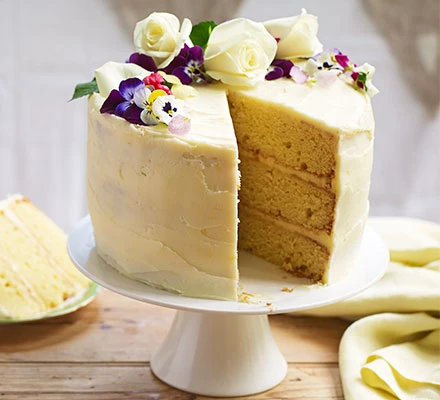

Royal Lemon and Elderflower Cake

Description
To make 15cm cake only divide recipe by 5 To make 20cm cake only divide recipe by 3 To make 25cm cake only
divide recipe by 2
Ingredients
Lemon Sponge
- 2.5kg self-raising flour
- 1.5kg caster sugar
- 4 Tbsp baking powder
- Zest of 8 lemons
- 2.5 litres non-dairy milk
- 1 litre vegetable oil
- 200ml Elderflower Syrup
Elderflower Syrup
- 300g sugar
- 350ml elderflower cordial
Lemon and Elderflower Curd
- 175ml lemon juice
- 75ml elderflower cordial
- 125ml water
- 250g caster sugar
- 65g cornflour
- 150 ml soya cream
- 20 g vegan butter
- 1 pinch salt
Icing
- 1 kg vegan butter
- 2 kg icing sugar
- 6–9 Tbsp Lemon and Elderflower Curd
Assembly Materials
- 2 15cm, 2 20cm, and 2 25cm cake boards
- 2 15cm, 2 20cm, and 2 25cm Lemon Sponges
- 400 ml Elderflower Syrup
- 3 Tbsp Lemon and Elderflower Curd
- Icing
- 10 cake dowels
- Fresh flowers
Steps
Lemon Sponge
- Preheat your oven to 180 degrees. Grease and line 6 deep, round cake tins (two 25 cm in diameter, two 20 cm,
and two 15 cm).
- Mix the flour, sugar, baking powder, and lemon zest in a very large bowl.
- Pour in the non-dairy milk and oil, stirring until everything is combined.
- Divide the batter among the tins, filling each one to the same level. Tap them all on the work surface to
pop any bubbles, then place in the oven.
- After 45 minutes, remove the 15-cm sponges and insert a skewer into each. If it comes out clean, allow to
cool. If not, return the sponges to the oven and test again every 5 minutes. Inevitably, your larger sponges
will take longer to bake (around 1 hour for the 20-cm ones and 1 hour and 15 minutes for the 25-cm ones) but
be sure to keep an eye on them, as all ovens are different.
- Once all the sponges are baked, use a pastry brush to cover them with a generous layer of warm Elderflower
Syrup.
- Allow to cool a little in the tins before transferring to a wire rack.
- Make sure the sponges have cooled all the way through before attempting to assemble your cake. If you have
time, wrap them in cling film and allow to rest overnight.
Elderflower Syrup
- In a saucepan, dissolve the sugar in the cordial and bring to the boil.
- Simmer for a few minutes until slightly thickened and then remove from the heat.
Lemon and Elderflower Curd
- In a small bowl, combine the lemon juice, cordial, water, and caster sugar.
- Place the cornflour in a small saucepan and stir in the lemon mixture a tablespoonful at a time.
- Pop your mixture on the hob and bring to the boil. Heat for around 1 minute – it should turn thick and
glossy.
- Remove from the heat and stir in the soya cream, vegan butter, and salt. Allow to cool, pop in a container,
and refrigerate until needed.
Icing
- In a very large bowl, beat the vegan butter with an electric whisk to soften.
- Add 1 kg of icing sugar and mix by hand to begin with to avoid covering your kitchen with icing sugar, then
beat with the electric whisk.
- Add the remaining icing sugar and beat until fluffy. Whisk in the Lemon and Elderflower Curd, 2
tablespoonfuls at a time, being careful not to add too much – you want the icing to be firm enough to
support your cake. If it becomes too soft, add a little more icing sugar.
Assembly
Now for the fun but slightly tricky bit: assembling your beautiful cake.
- First off, cut a thin layer off the top and bottom of each sponge in order to get rid of any crust and
create a nice flat surface. Carefully trim the sides as well.
- Slice each one width ways through the centre so that you have four even rounds of each size.
- Spread a little icing over a 15-cm cake board.
- Top with one sponge of the same size, brush over some of your Elderflower Syrup, add a thin layer of Lemon
and Elderflower Curd, and spread with some icing. Repeat twice, then place the final 15-cm sponge on top,
cover the stack with cling film, and place in the fridge or freezer to firm up.
- Repeat the two steps above with the 20- and 25-cm cake boards and sponges.
- Once your cake layers are firm, cover the tops with icing and press a cake board, silver side down, on top.
Make sure your top and bottom boards align. Smooth icing around the sides of the layers using a scraper or
palette knife. Chill again to firm up.
- Run a knife carefully around the cake board “lids” to pop them off. Some icing may come away – just smooth
some more over the top.
- Coat each layer with extra icing, then run the tip of a palette knife around the sides to create a pretty,
rustic effect.
- To prevent any of the layers from collapsing, you’ll need to dowel the 20- and 25-cm ones. Place a 15- cm
cake board on the 25-cm layer, use a toothpick to make tiny holes around the circumference, then
remove the board. Run a dowel straight down through the centre of the layer to the board, mark with a pencil
the point where it emerges from the top, remove it, cut it at the mark, and trim three other dowels to the
same length. Place one back into the centre and insert the others as far apart as possible within the
toothpick marks. Repeat for the 20-cm layer.
- Finally, simply stack your cakes and adorn with fresh flowers.
Notes
Home